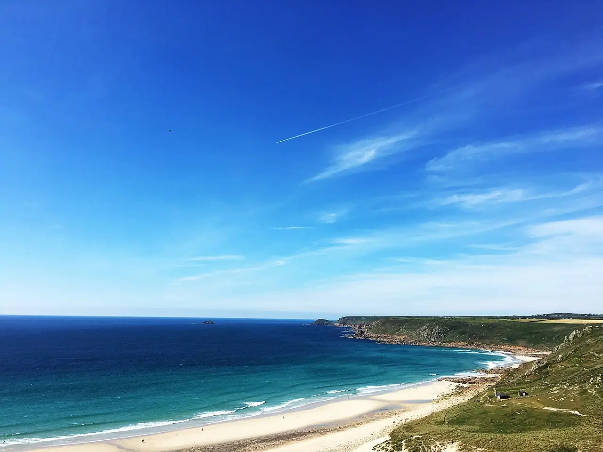

Sennen Cove
Cornouailles, Angleterre, Royaume-Uni · surf, bodyboard, baignade

Plage de sable blanc de Whitesand Bay, tout près de Land’s End, à la pointe ouest de la Cornouailles. Elle capte presque toutes les houles atlantiques : vagues douces vers le port, plus musclées au nord de la baie.
- Lieu
- Cornouailles, Angleterre, Royaume-Uni
- Niveau
- Débutant
- Activités
- surf, bodyboard, baignade
- Type d'eau
- Mer / océan
- Coordonnées
- 50.08, -5.70 (position approximative du secteur)
Dangers à connaître
- Courants d’arrachement près des rochers et par grosse houle.
- Rochers aux extrémités de la plage.
Le conseil d'Ocean Buddy
Débute côté port, où les vagues sont plus douces, et baigne-toi entre les drapeaux quand la plage est surveillée.
Ouvrir dans Ocean Buddy Télécharger sur l'App Store
Source : Fiche Ocean Buddy · septembre 2026 · à vérifier localement.